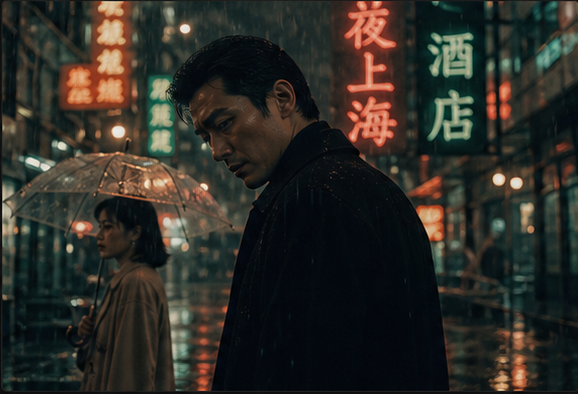
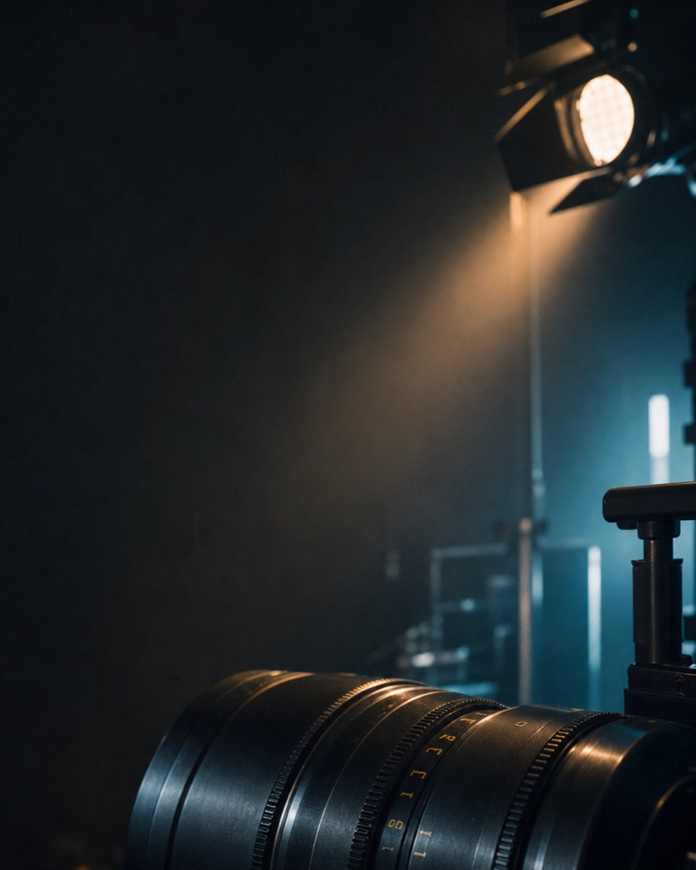

从剧本开始
先保留场次草稿，再确认写入项目。
AI 导演分析设置（本地密钥不保存）
使用任意文本模型拆场拆镜（无需 API）
复制导演拆解模板，在任意文本模型完成分析后，将返回的 JSON 粘贴到这里。系统只会生成可审核草稿，不会直接覆盖你的正式分镜。
制作进度
当前制作进度
项目库
项目资料只保存在当前浏览器，可导出备份。
先保留场次草稿，再确认写入项目。
复制导演拆解模板，在任意文本模型完成分析后，将返回的 JSON 粘贴到这里。系统只会生成可审核草稿，不会直接覆盖你的正式分镜。
导演 / 类型 / 高级影调 / 中国影视 / 场景

这里会集中显示色彩倾向、光影关系、参考影片与提示词状态。

组合主体、情绪与影调规则

CHAR-001_角色名_白底三视图_v001_LOCKED.png电影海报 · 悬疑 / 人物 / 剧情
使用上传的角色图、商品图或构图图，锁定需要保留的内容。
海报与字标只保存在当前浏览器，不上传服务器；项目文件仅记录本机资产编号。
POSTER_项目名_电影海报_2x3_v001.png参考图、任务边界与替换要求
本地选图只用于当前浏览器预览，不上传服务器，也不会写入项目备份。
把可见证据转成可执行参数
人工校准 0 / 8，未校准维度会使用参考图分析任务。
REVERSE_参考画面_八维反推_v001.txt
案例机制 / 类型模板
角色、场景、表演与镜头规则
先建立配乐意图，运镜会在这里显示节奏、情绪与关键画面关系。
从叙事任务出发，选择后仍可完整改写。
描述画面、情绪、配器和结构，保持创作自由。
不限定固定秒数，由四段音乐结构决定最终长度并自然收束。
同一导演意图，转换为不同音乐模型需要的格式。
保存一个完整方案后，这里会保留可恢复的配乐版本。
MUSIC_影视纯音乐_v001.txt